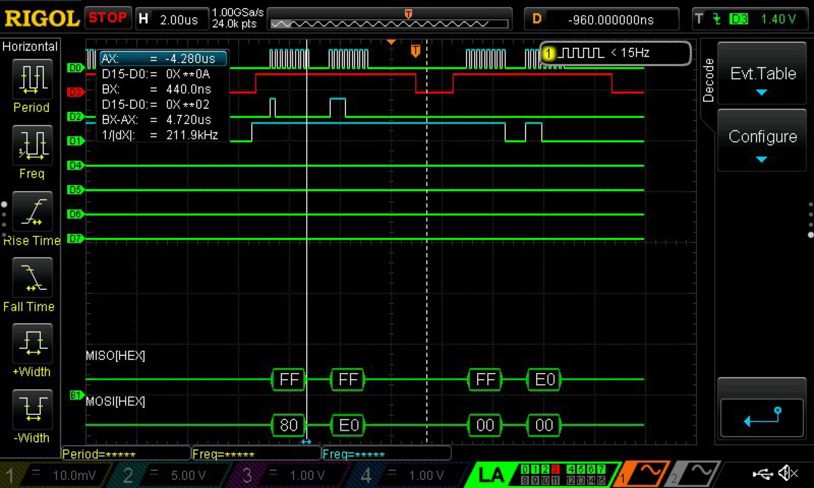
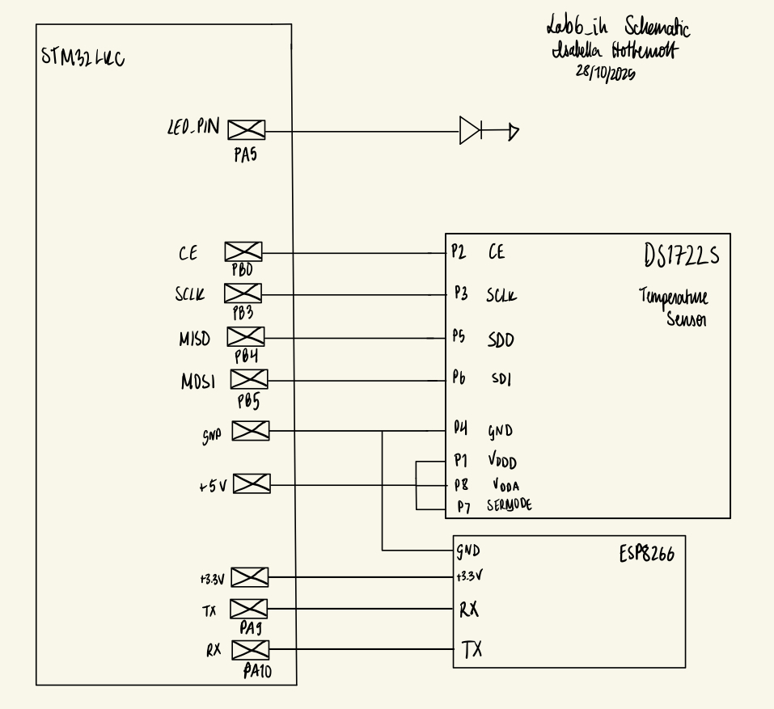

Lab 6: The Internet of Things and Serial Peripheral Interface
Introduction
In this lab, an IoT device was implemented and used to control an LED, as well as read temperatures at a user-selected bit-granularity of the temperature sensor. An ESP8266 WiFi dev board was used, along with arduino code to host the web server, and HTML generated by the MCU to host the web page. The temperature sensor used in this design is the DS1722 Digital Thermometer. UART communication was set up between the MCU and ESP8266, while the digital thermometer spoke with the MCU over SPI. This lab required that the SPI driver uses CMSIS templates, which this design implements.
The webpage produced by the HTML code allows for a user to control the status of an on-board LED. The status of the LED is simultaneously correctly reported on the page. The page also allows a user to select whether the temperature sensor measures temperature at 8-, 9-, 10-, 11-, or 12-bit granularity. The bit granularity implemented at the time is correctly reported on the webpage, and the temperature readings demonstrate changes in bit-granularity by an increase in significant digits at higher granularity. Finally, the temperature presently measured by the sensor is reported in degrees Celsius on the page. Temperature readings are updated any time the page is refreshed, or any time a Request is sent following a change in user-control options.
Design and Testing Methodology
Once SPI communication was understood and the datasheet was read through, an implementation for the SPI driver was written out. This design required full duplex communication, and only one peripheral to talk to. Therefore, selecting a peripheral was a trivial task, and a GPIO pin was used on the chip enable line.
The temperature sensor needd to first be initialized by writing the proper configuration to the address 0x80. A single-byte write required the read address, followed by the data byte, to be written to the sensor throug its SDI line. On the other hand, a single-byte read required the read address to be written to the temperature on the SDI pin. The SDO pin would immediately after respond with the data byte. The single-byte reads were executed when reading the temperature sensor, as the sensor was configured in the one-shot configuration, instead of constant conversion.
Any time a new request was sent from the webpage, the configuration and sensor-reading functions were executed in C.
Every single byte write or single byte read was encased in an assertion and deassertion of the chip enable bit, writing this bit HIGH from the GPIO.
The singly byte reads for temperature had to access the 0x02 and 0x01 registers to read the MSB > 0 (0x02) and LSB < 0 (0x01) components of the two’s complement representation produced by the sensor.
Technical Documentation
The Rx and Tx lines for UART communication used pins in GPIO port A. To avoid any potential interference between the two communication protocols, GPIO port B was enabled and utilized for PSI communication.
To verify that the configuration register was being accessed, and that SPI communciation was functional in the first place, the configuration register was read back after being written. A logical analyzer trace for this can be seen below. The first two bytes represent the configuration address and the proper configuration being written to the sensor, so the MISO output is irrelevant. The third byte represents the configuration read address being written to the sensor, so once again the MISO output is irrelevant. The final byte represents the configuration being written out from the temperature sensor, so the MOSI output is now irrelevant. As seen, the byte read out by the temperature sensor matches what was written two bytes prior.

In order to convert the dual-register, signed two’s complement representation of temperature into a decimal value that would properly convert negative numbers and significant figures, the values extracted from the registers were manipulated. The MSB was shifted right by 8 to discard the fractional bits returned by the read temperature function. The fractional bits were similarly extracted and multiplied by 1/16 to produce the proper fractional representation, since at 12-bit resolution, the LSB could measure up to 1/(2^4) = 1/16. The sum of these were then calculated, and cast into a float. This was then printed on the webpage. To verify that negative temperatures could be handled, since no negative ambient temperatures could be reproduced, back calculations for the register-level representations of negative temperatures were made. These were then fed into the converting code, and proved to successfully print out negative values.
Schematic
The below schematic was implemented onto a breadboard for this design.

Results and Discussion
This project successfully demonstrated SPI communication, as well as the ability of embedded devices to communicate with a server and digitize sensor data or other similar information.
Conclusion
This design was a successful implementation of SPI and UART communication, as well as the development of an IoT device. There was responsive and accurate communication between the temperature sensor, MCU, WiFi dev board, and webpage. This lab took me 12 hours.
AI Prototype Summary
I asked Gemini the prompt: I’m making a web portal to interface with a temperature sensor. Create a HTML page that looks good and is intuitive to show the temperature, control an LED, and change the precision of the readout.
It responded:
<!DOCTYPE html>
<html lang="en">
<head>
<meta charset="UTF-8">
<meta name="viewport" content="width=device-width, initial-scale=1.0">
<title>Temperature Sensor Portal</title>
<style>
/* --- General Styling --- */
body {
font-family: 'Arial', sans-serif;
background-color: #f0f2f5;
display: flex;
justify-content: center;
align-items: flex-start;
min-height: 100vh;
margin: 0;
padding-top: 50px;
}
.container {
background-color: #ffffff;
padding: 30px;
border-radius: 12px;
box-shadow: 0 4px 12px rgba(0, 0, 0, 0.1);
width: 100%;
max-width: 400px;
text-align: center;
}
h1 {
color: #333;
margin-bottom: 30px;
font-size: 1.8em;
border-bottom: 2px solid #eee;
padding-bottom: 10px;
}
/* --- Temperature Display --- */
#temperature-display {
font-size: 4em;
font-weight: bold;
color: #d9534f; /* Warm color for temperature */
margin-bottom: 20px;
}
.unit {
font-size: 0.5em;
vertical-align: top;
display: inline-block;
margin-left: 5px;
}
/* --- Control Section --- */
.control-group {
margin-top: 25px;
padding: 15px;
border: 1px solid #ddd;
border-radius: 8px;
text-align: left;
}
.control-group h3 {
margin-top: 0;
color: #555;
font-size: 1.1em;
border-bottom: 1px solid #eee;
padding-bottom: 8px;
margin-bottom: 15px;
}
.control-item {
display: flex;
justify-content: space-between;
align-items: center;
margin-bottom: 15px;
}
.control-item:last-child {
margin-bottom: 0;
}
/* --- LED Control Button --- */
#led-button {
padding: 10px 20px;
border: none;
border-radius: 5px;
cursor: pointer;
font-weight: bold;
transition: background-color 0.3s, box-shadow 0.3s;
}
.led-on {
background-color: #5cb85c; /* Green */
color: white;
box-shadow: 0 2px 4px rgba(92, 184, 92, 0.4);
}
.led-off {
background-color: #f0ad4e; /* Orange */
color: white;
box-shadow: 0 2px 4px rgba(240, 173, 78, 0.4);
}
#led-button:hover {
opacity: 0.9;
}
/* --- Precision Control --- */
#precision-select {
padding: 8px;
border-radius: 5px;
border: 1px solid #ccc;
background-color: #f9f9f9;
}
</style>
</head>
<body>
<div class="container">
<h1>Web Sensor Interface</h1>
<div class="data-display">
<h2>Current Temperature</h2>
<div id="temperature-display">
24<span class="unit">.50°C</span>
</div>
</div>
<hr>
<div class="control-group">
<h3>Device Controls</h3>
<div class="control-item">
<span>**LED Status:**</span>
<button id="led-button" class="led-off">Turn ON</button>
</div>
<div class="control-item">
<span>**Readout Precision:**</span>
<select id="precision-select" onchange="updateTemperature(currentTemp)">
<option value="0">0 Decimal (25°C)</option>
<option value="1">1 Decimal (24.5°C)</option>
<option value="2" selected>2 Decimals (24.50°C)</option>
<option value="3">3 Decimals (24.500°C)</option>
</select>
</div>
</div>
</div>
<script>
// --- Global State ---
let isLedOn = false;
let currentTemp = 24.505; // Placeholder for the full temperature value
// --- DOM Elements ---
const tempDisplay = document.getElementById('temperature-display');
const ledButton = document.getElementById('led-button');
const precisionSelect = document.getElementById('precision-select');
// --- Functions ---
/**
* Toggles the LED state (simulated).
* In a real application, this would send an AJAX/Fetch request to your sensor's backend.
*/
function toggleLed() {
isLedOn = !isLedOn;
if (isLedOn) {
ledButton.textContent = 'Turn OFF';
ledButton.classList.remove('led-off');
ledButton.classList.add('led-on');
console.log("LED turned ON. (Simulated backend call)");
// Real code: fetch('/api/led/on');
} else {
ledButton.textContent = 'Turn ON';
ledButton.classList.remove('led-on');
ledButton.classList.add('led-off');
console.log("LED turned OFF. (Simulated backend call)");
// Real code: fetch('/api/led/off');
}
}
/**
* Updates the temperature display based on the selected precision.
* @param {number} temp - The raw temperature value.
*/
function updateTemperature(temp) {
const precision = parseInt(precisionSelect.value);
const parts = temp.toFixed(precision).split('.');
// Handle case where precision is 0 (no decimal part)
const integerPart = parts[0];
const decimalPart = parts.length > 1 ? '.' + parts[1] : '';
tempDisplay.innerHTML = `${integerPart}<span class="unit">${decimalPart}°C</span>`;
}
/**
* Simulates fetching new sensor data and updates the display.
* In a real application, this would run periodically via setInterval or WebSockets.
*/
function fetchNewTemperature() {
// In a real app, you'd use fetch:
// fetch('/api/temperature').then(res => res.json()).then(data => { currentTemp = data.temp; updateTemperature(currentTemp); });
// For this example, let's simulate a minor temp change:
currentTemp = 24.505 + (Math.random() - 0.5) / 10; // Small random fluctuation
updateTemperature(currentTemp);
}
// --- Event Listeners and Initial Setup ---
// 1. LED Button
ledButton.addEventListener('click', toggleLed);
// 2. Initial Temperature Display
updateTemperature(currentTemp);
// 3. Simulated Live Update (fetches new temp every 5 seconds)
setInterval(fetchNewTemperature, 5000); // Poll every 5 seconds (adjust as needed)
</script>
</body>
</html>Next, I asked: Write me a C function to carry out a SPI transaction to retrieve a temperature reading from a DS1722 sensor. Make use of CMSIS libraries for the STM32L432KC.
It responded:
#include "ds1722.h"
#include <stdint.h>
/**
* @brief Performs an SPI transaction to read the temperature from the DS1722 sensor.
* * The DS1722 expects a 1-byte read command (0x01) followed by 2 bytes of data
* which contain the 16-bit two's complement temperature value. The LSB is 1/128 °C.
* * @param None
* @return The temperature reading in degrees Celsius (float).
*/
float DS1722_ReadTemperature(void)
{
// The transaction requires 1 byte for the command (0x01) followed by 2 bytes
// of dummy data to clock out the 16-bit temperature from the sensor.
uint8_t tx_buffer[3] = {DS1722_CMD_READ_TEMP, 0xFF, 0xFF};
uint8_t rx_buffer[3] = {0};
int16_t raw_temperature = 0;
float temperature_celsius = 0.0f;
// 1. Activate Chip Select (CS low)
HAL_GPIO_WritePin(DS1722_CS_GPIO_PORT, DS1722_CS_PIN, GPIO_PIN_RESET);
// 2. Transmit the command byte and simultaneously receive the data bytes.
// The total transfer length is 3 bytes (Command + MSB Data + LSB Data).
HAL_StatusTypeDef status = HAL_SPI_TransmitReceive(
&DS1722_hspi,
tx_buffer,
rx_buffer,
3,
HAL_MAX_DELAY
);
// 3. Deactivate Chip Select (CS high)
HAL_GPIO_WritePin(DS1722_CS_GPIO_PORT, DS1722_CS_PIN, GPIO_PIN_SET);
// Check for successful transmission
if (status != HAL_OK)
{
// Handle error: return a distinct error value or log the issue
// For simplicity, we return a very low value.
return -999.0f;
}
/* * The temperature data is returned in rx_buffer[1] (MSB) and rx_buffer[2] (LSB).
* The MSB is received first.
* Raw data format: [S S S S S S S S | D D D D D D D D]
* MSB (rx_buffer[1]) holds the high 8 bits.
* LSB (rx_buffer[2]) holds the low 8 bits.
* The LSB is bit D7 (1/128 degree Celsius).
*/
// Combine the 2 received bytes into a 16-bit signed integer (Two's complement)
raw_temperature = (int16_t)((rx_buffer[1] << 8) | rx_buffer[2]);
// 4. Convert the raw two's complement value to Celsius.
// The resolution is 1/128 °C (0.0078125 °C) per LSB.
temperature_celsius = (float)raw_temperature / 128.0f;
return temperature_celsius;
}The HTML production was successful, however the C code did the wrong temperature conversion, multiplying the LSB by 1/128 instead of 1/16.